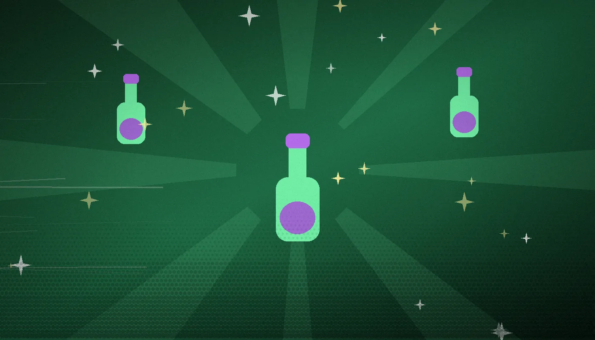
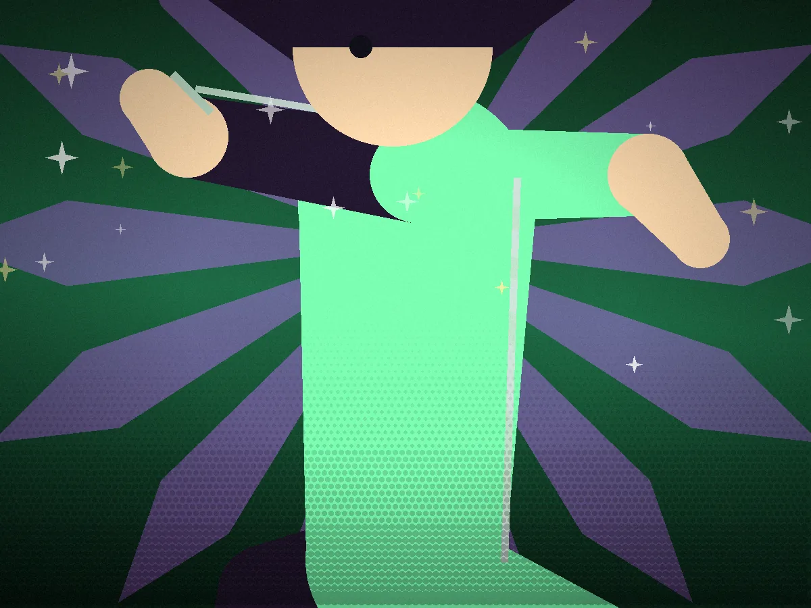
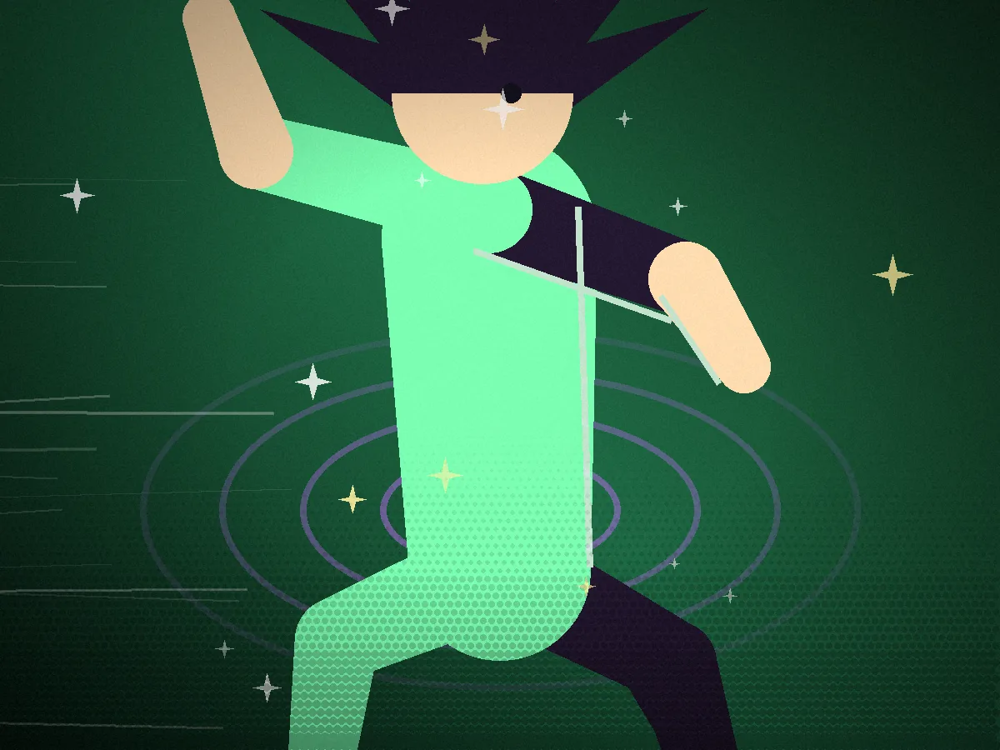

Scene one
The scroll says "a pinch."
Sure. A pinch of what, exactly? The recipe scroll is smudged, the cauldron is impatient, and your hand is already over the jar of something glowing.

Scene two
That was NOT a pinch.
The cauldron hiccups, then roars. Violet sparks chase you around the bench while the potion decides whether to heal, transform, or simply detonate.

Scene three
Glitter-bomb. Somehow a win.
The lab is coated in sparkle-residue, your eyebrows are gone, and the potion works perfectly. Chaos, it turns out, is a legitimate brewing technique.